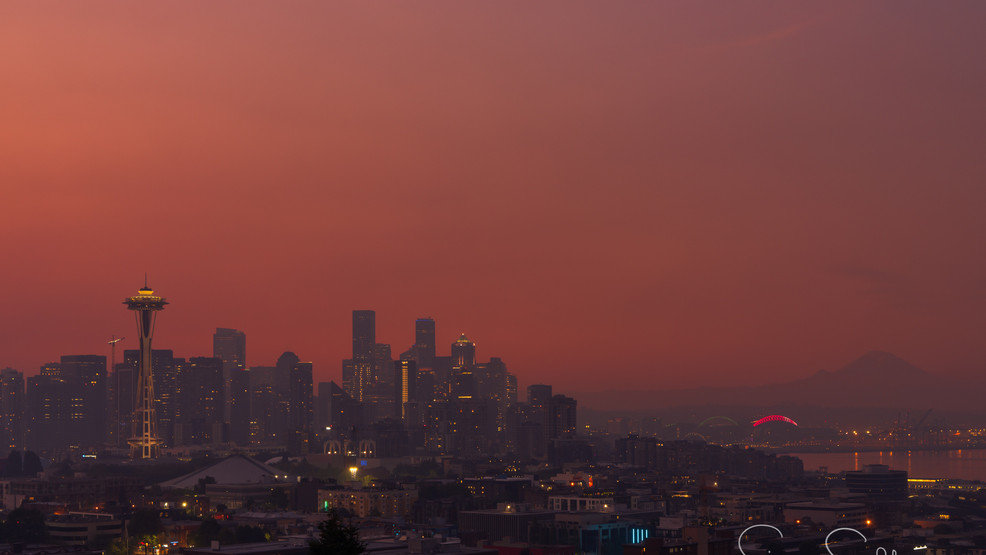

Helping the Enviroment

There are so many things going on with the environment and this just captures a few things happening
mainly in Kirkland, WA. Each page you will see different things such as endanged and invasive species,
food waste, deforestation, and pollution. You will learn about different ways to help the environment
and you will see images of things happening around Kirkland.
Fun facts about the enviroment!
- Humans only use 1% of avaliable water
- Fungi play a vital roll in the environment
- Coral reefs are Earth's largest living
- Antarctica is home to the world's largest sheet of ice
- The Earth's longest mountain range is underwater
- Our planet has more trees compared to stars in the solar system
